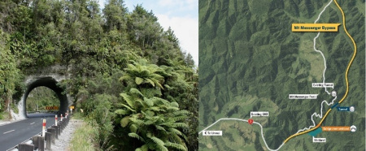
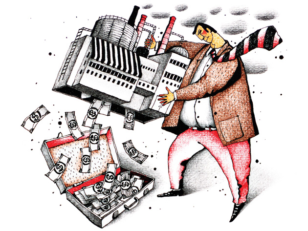

Press release: Mt Messenger Bypass shameful disaster
Climate Justice Taranaki are extremely disappointed at Commissioner Daysh’s decision to approve the Mt Messenger Bypass.
Climate Justice Taranaki are extremely disappointed at Commissioner Daysh’s decision to approve the Mt Messenger Bypass.
To smash yet another pointless road through a wild valley with threatened endemic species is insane. We are in the middle of a climate emergency and a mass species extinction yet the crown’s NZTA dinosaur organisation still cannot see the writing on the wall. Wrecking forest, wetland and awa to save a dying trucking industry a few dollars and four minutes travel time is reckless, especially when funded by public money. No mitigation will ever cover what has been destined for destruction and this country should be ashamed of yet another ‘clean, green’ fallacy.
said spokesperson Emily Bailey.
The group are considering appealing the decision in a hope to stop any future roads like this ever being approved in the country. Direct action is also being discussed.
We call on Ministers Phil Twyford and Julie Anne Genter to do what they can to prevent future disasters like this from being made. Repairing Aotearoa’s main trunk line for freight and passengers, expanding public transport, developing electric vehicle infrastructure and extending cycle lanes and walkways are the ways to go, not this backwards diesel disaster.
said Bailey.
Press release: Sustainable hydrogen or oxymoron?
Yesterday, 150 scientists and researchers made this stark warning: A disastrous future for humanity if we continue our current path of rampant consumerism and endless economic growth
. In an open letter, they demand that the government meets its duty to protect its citizens from harm and to secure the future for generations to come.
Yesterday, 150 scientists and researchers made this stark warning: A disastrous future for humanity if we continue our current path of rampant consumerism and endless economic growth
. In an open letter, they demand that the government meets its duty to protect its citizens from harm and to secure the future for generations to come.

So on the same day when Regional Economic Development Minister Shane Jones spoke of a potential, monumental
one billion dollar project that would create hydrogen and create an output of urea
it leaves you wondering what exactly the government thinks cutting emissions by half really means.
There’s a saying: ‘rolling a turd in glitter’ and that’s exactly what Shane Jones is offering
says Climate Justice Taranaki spokesperson Emily Bailey. This second round of unsustainable Think Big technology is not proven and even if it was it will be ridiculously expensive and still require fracked gas that is estimated to run out in ten years time. Who in their right mind would invest in such a project?
.
The project has been touted by the US based 8 Rivers Capital LLC. According to their website, the company has developed technology to generate power from fossil fuels, apparently without air emissions, the only by-products being ‘water’ and pipeline-ready
or carbon capture-ready
carbon dioxide.
Based on our research, carbon capture and storage (CCS) has not been effective or economically viable anywhere, despite decades of talks and trials. One project in the US captures about one tenth of the CO2 emitted from a coal-fired power station and pipes it 80 miles to an oil field to be injected into old wells to produce more oil. The term ‘clean coal’ is simply oxymoron – how can one say CCS is clean or sustainable when it fuels yet more fossil fuel mining?
To use the waste to produce more urea for industrial farming is also ludicrous given it is one of the planet’s worst greenhouse gas emitting chemicals and a serious soil and waterway pollutant. It’d be a monumentally disastrous project, one that would take us to a disastrous future – climate breakdown. We do not accept ‘blue hydrogen’ made from fossil fuels involving carbon capture and storage as clean either – it is yet another oxymoron.
Never before have our prominent scientists united and spoke against consumerism and economic growth so loudly, we have got to listen and ask ourselves what sort of a future we want? Taranaki was much better off before big oil and gas brought centralised milk production stations, synthetic fertiliser and trucks, ships, mechanisation and megadebts to farming. The younger generations are already firing ahead with community-scale regenerative and urban farming projects that offer far better quality of life for workers and massively reduce emissions, waste and pollution. Alongside renewable energy and energy efficient infrastructure this just makes sense.
There is a huge push from society for real solutions, just look at the massive protests in London this week and the numerous petitions pushing for going plastic-free and banning urea, deep-sea oil and fracking. More of the same gives us more of the same. It’s time to focus on existing, proven sustainable projects rather than expensive, massively flawed pies in the sky
said Emily Bailey of Climate Justice Taranaki.
Cartoon: https://www.chemistryworld.com/opinion/the-carbon-capture-challenge/9069.article
Media coverage: Environmentalist critical of Taranaki’s proposed $1b hydrogen project, TDN 23/11/2018